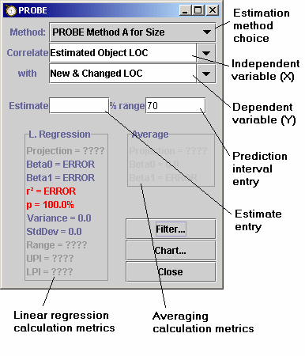
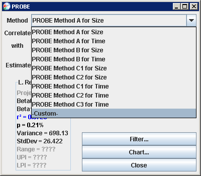
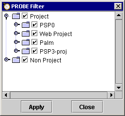
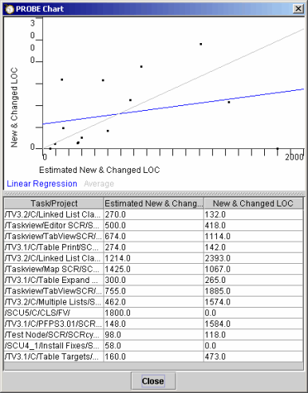

PROBE" from the
configuration menu.
PROBE" from the
configuration menu.When following PSP's PROBE process (as defined in the book A Self-Improvement Process for Software Engineers), most people will want to use the PROBE Wizard. It thoroughly automates the PROBE process and helps you to avoid common mistakes.
However, the PROBE Wizard is specifically designed for the correlations
described in the PSP process scripts. If you thoroughly understand the
linear regression calculations, the PROBE tool can offer more flexibility.
The PROBE Tool will allow you to explore the correlations between any pair
of metrics, not just the pairs described in the PROBE process. The PROBE
tool can be opened by selecting
"Tools PROBE" from the
configuration menu.

If you wish to explore the correlations of the standard PROBE data pairs, the Method pull-down allows quick access to them. Clicking on the pull-down gives the following choices:

Choosing any of the standard PROBE methods will set the independent and dependent variables to their appropriate values. If you would like to explore correlations between any two other process metric variables, they can be chosen from the independent and dependent variable pull-downs.
Basically the PROBE tool runs a correlation test on the two sets of data chosen. It then reports the various statistical measurements on the dialog. There are two types of measurements shown on the dialog: those that show relationships between the sets of data chosen (r2, p, Variance, Standard Deviation), and those that are related to a projection based on the estimate entered (B0, B1, Range, UPI and LPI). Also there are two columns of data on the tool. The left column shows data based on a linear regression (this is for methods A and B the PROBE estimation method) and the right column shows data based on how well your data seem to predict on the average (this is for the different C methods of the PROBE estimation method).
The filter button allows you to restrict the data set of the correlation and projection to certain projects. It will pop up a tree view of the current projects stored and allow you to add or remove data items from the selected set.

Seleted items are marked with a graphical "X". By default the tool only shows projects in the tree (nodes). You can expand this view to include the process phases as well by choosing the "Show leaf nodes" box. This will allow you to include or reject data from among different phases of projects. The Apply button applies your filtering selection to the numbers in the PROBE dialog.
On a typical estimation, you will want to choose from the different combinations of correlations available to see if any of the data correlate well enough to be used for projections. The PROBE tool will make this quite simple. Just pick the two data sets you would like to correlate, and the numbers on the tool will update to show you the results. The key numbers to examine are the measure of correlation (r2) and the significance measurement (p).
As detailed by Watts Humphrey, an r2 value of over 0.5 indicates that the numbers correlate well enough to use a linear regression method. The degree of confidence as measured by the r2 variable is shown on the dialog by its color. When the value is too low to be used for predictive purposes, the r2 value will show up in red. Values that show better and better agreement are shown in different colors. The colors used are: red (very bad), yellow/orange (fair), blue (good), and black (very good).
The significance measurement is an indication of how significant the correlation is. It is expressed in a percentage that represents the probability that this correlation could have happened by chance. Low numbers mean that the data is probably showing a causality and can be used to make projections. The same color scheme to show the relative "goodness" of the data is used here.
Both measures need to be taken into consideration before using a projection from a linear correlation. There are some data combinations that can make one of the measurements look good while the other is bad. For example if you have data that correlate well but the significance of that correlation is not very high, you could be looking at a random occurrence.
To make a projection, just enter an estimate in the Estimate entry. The estimate should be an estimate of the type of data that is chosen in the top pull down box marked "Correlate". For example, you should put an estimated number of New & Changed LOC in the entry if you are correlating against Estimated New & Changed LOC. The % range entry will allow you to change the confidence interval of the projection. Most PSP work is done at a 70% confidence interval, but you can set this as high or as low as you would like. Setting the confidence interval higher will give you a wider range of possible values, and setting the interval lower will narrow the range of possible values.
As you change the input parameters, the tool will relcalculate all the numbers appropriately. Some calculations may display ERROR if the data is poorly correlated, or if there are not enough historical data points to perform the calculation. The projected estimate will show up at the top of both columns (the left column showing the projection using linear regression and the right column showing the projection based on an averaging technique). It is up to you to decide which numbers are appropriate for making the projection.
The PROBE tool also offers a scatterplot of your process data. This view is chosen by clicking on the "Chart" button.

The plot will show a scatterplot of the data being used for the regression calculations and two lines passing through the data. A blue line shows the line as projected from B0 and B1 calculated using linear regression, and a red line shows the line as projected from the averaging calculation. Only one of these lines will be in color if you've chosen one of the standard PROBE estimating methods. In this case, the other line is shown in grey. If you choose a custom estimation method (i.e. you are comparing different sets of data than what the PROBE method calls for) both lines will show in color. Many times this visual representation of the data can provide insights that straight numbers may not.
The three columns below the plot display the actual values used for the data plotted. The first column contains the project name, and the second and third columns show the data values for the X and Y axes respectively.